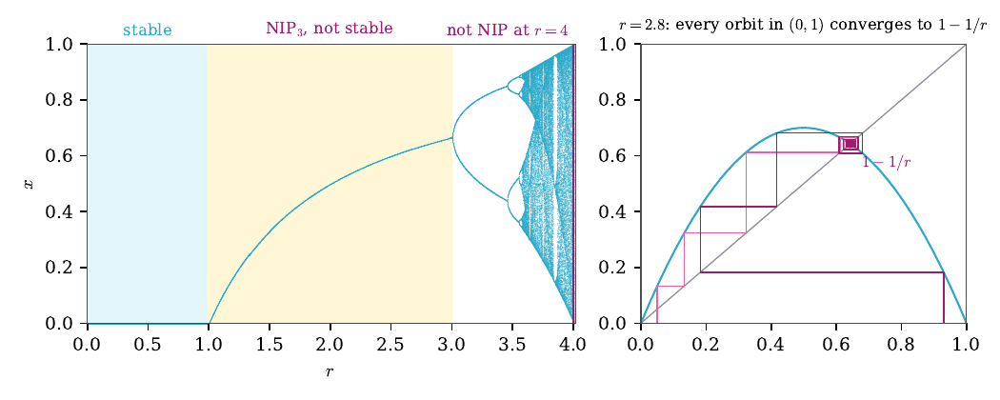
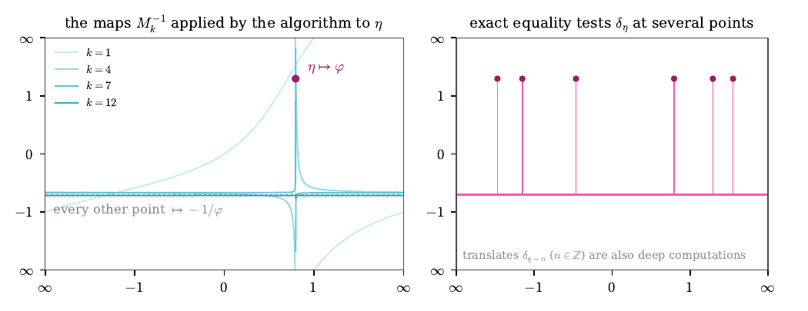
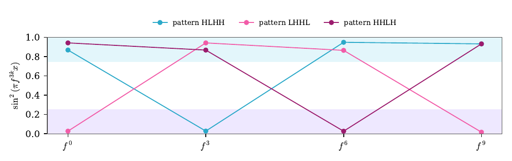

A computation is a map applied over and over. Its deep computations are the limits of its iterates, taken point by point. These examples come from the paper Complexity of deep computations via topology of function spaces by Dueñez, Iovino, Matos-Wiederhold, Salvetti and Tall. Move the sliders and watch the limits form.
The map f(x) = r·x·(1 − x) sends [0, 1] into itself. For small r its iterates settle down; at r = 4 they scramble every input. The left panel draws the n-th iterate as a function of the starting point, the right panel follows one orbit.
The n-th iterate fⁿ(x) over [0, 1]. The dashed line is the limit when it exists.
Cobweb: the orbit of the starting point x₀ bounces between the curve and the diagonal.
The long-run values of every orbit, for each r from 2.5 to 4, coloured by level: sky blue up to r∞ ≈ 3.5699, pink beyond. The vertical line marks the current r.
What to see. For r ≤ 1 every orbit falls to 0, and the limit is the constant 0, a continuous map: the computation is stable. For 1 < r ≤ 3 the iterates converge to the map that sends 0 and 1 to 0 and every other point to 1 − 1/r. That limit jumps at 0 and at 1, so it is not continuous, yet it is a limit of a sequence of computations: the level is NIP₃ but not stable. Past r = 3 the attracting cycles double, to periods 2, 4, 8, …, up to the Feigenbaum parameter r∞ ≈ 3.5699. Every period is still a power of 2, every orbit settles onto a cycle, and the deep computations still form a metrizable space: NIP₃, not stable (at r∞ itself the paper gives a sketch). Beyond r∞, even inside the windows where a single cycle attracts almost every orbit, some iterate folds two intervals over both of them, a horseshoe, and independent sequences appear: the computation is not NIP.
The continued fraction algorithm writes a number η = [a₀; a₁, a₂, …] by repeating two steps, x ↦ x − a and x ↦ 1/x. After k + 1 steps it has applied a Möbius map Mk−1, which sends η to its tail ηk+1 = [ak+1; ak+2, …]. Here we apply the same map to every input. Both axes are the projective line, from ∞ through 0 back to ∞.
What to see. In the middle of a long run of 1s, the map sends every point except η close to −1/φ ≈ −0.618 and sends η close to φ ≈ 1.618. In the limit it is an exact equality test: it asks whether the input equals η. There is one such test for each of uncountably many η, and they all crowd around the constant map −1/φ. That is why the space of deep computations of the Euclidean algorithm is NIP but not first countable. No single Möbius map can do this: the iterates of one map converge, or cycle, and their limits form a countable set.
Bresenham's algorithm draws the line y = αx + ρ on a pixel screen. At each step it moves one pixel right and decides whether to move one up. The state is the accumulated error, which moves by α each step: a rotation of the circle.
What to see. Far along the line, the algorithm behaves like one of two limit maps, R⁺ and R⁻. They agree at every pixel except where the line passes exactly through a pixel corner, and there they round in opposite directions. Set ρ = 0 to put a corner on the line and switch the rounding. These pairs of limits make a double arrow circle, which is hereditarily separable but not metrizable: the level is NIP₂ but not NIP₃. Drawing a line in space runs two such algorithms at once and drops one level, to NIP₁ but not NIP₂.
The doubling map x ↦ 2x (mod 1) shifts binary digits one place left. We watch the value of sin²(πx) every third step, and call it high (H) when it is at least 3/4 and low (L) when it is at most 1/4. Choose a pattern of highs and lows; the page builds a starting point that follows it.
What to see. Every pattern is realized: for H the next three binary digits of the starting point are 011, for L they are 000. A family of functions that follows every finite pattern contains an independent sequence, and then no subsequence of the iterates converges pointwise. The doubling map, the logistic map at r = 4 and Newton's method for z² − 1 on the Riemann sphere are all not NIP for this reason.
To draw a line in space with direction (1, α, β), Bresenham's algorithm runs the planar algorithm in two coordinates at once. Its state is a pair of errors, a point of the square [0, 1)², and each step adds (α, β). When 1, α, β are independent over the rationals, the orbit (nα, nβ) fills the square densely.
The states (nα, nβ) mod 1 for n ≤ N. Click to move the target; the box shows the iterates that come close to it, coloured by the side from which they come in each coordinate.
The same iterates, magnified around the target. Each quadrant gives a different limit: (R⁺, R⁺), (R⁺, R⁻), (R⁻, R⁺) or (R⁻, R⁻).
What to see. Iterates approach every target from all four sides, and each side yields its own limit, a pair of one-sided rotations. These limits form a product of two double arrow circles. A compact metrizable set of such limits must be countable, because every metrizable subset of the double arrow circle is countable. So the limits contain no Cantor set, which rules out the Alexandroff duplicate D(2ℕ). By Todorčević's trichotomy they contain instead a copy of D̂(S(2ℕ)), built on the split Cantor set: the level is NIP₁ but not NIP₂.
Section 2 applied one continued fraction to every input. Here we choose a branch c = (c₁, c₂, …) of 1s and 2s and, for each finite part t of it, a word of partial quotients built from blocks cj, …, c₁ followed by j ones. Each word gives a Möbius map gt. Moving along the branch, the maps flatten onto a constant a and keep one spike: the number r(c) is sent near the golden ratio φ.
What to see. Along the branch, the maps converge to the map that sends r(c) to φ and every other point to a. Approaching the same branch from the side, they converge to the constant a: the spike disappears. This is the pattern of convergence of the Alexandroff duplicate D̂(2ℕ), and indeed the closure of this countable family is a copy of it. The family is therefore NIP₁ but not NIP₂, and it contains the duplicate D(2ℕ) that the line in space cannot. Whether a single iterated map can do the same is an open question of the paper.
Newton's method for a polynomial p replaces z by z − p(z)/p′(z). We colour each starting point of the plane by the root its n-th Newton step is closest to: for q(z) = z³ − 2z + 2 a grey region also appears, the points drawn into the cycle 0 → 1 → 0; for u(z) = z³ − 1 the three roots are the cube roots of unity.
Colour of the n-th Newton step; darker where the step is still far from every root.
What to see. Inside each basin the colour settles quickly. Along the boundaries, the Newton fractal, every small disk contains points of every colour, at every zoom: some iterate maps two small disks over both of them. That gives independent sequences, so both Newton computations are not NIP. The paper proves this for every rational map of degree at least 2.
The Thue–Morse sequence tn is the parity of the number of ones in the binary expansion of n: 0110 1001 1001 0110 … The two-sided sequences all of whose blocks occur in it form a minimal system under the shift.
What to see. The bars are the correlations c(n) of the sign (−1)t with its shift by n; they obey c(2n) = c(n) and c(2n+1) = −½(c(n) + c(n+1)). The curve is the average of c(n)² over n < N, and it tends to 0. So the sign is orthogonal to every eigenfunction of the shift. A minimal tame system would be measure-theoretically isomorphic to its maximal equicontinuous factor, whose eigenfunctions span everything (Glasner; Huang; Kerr and Li). Hence Thue–Morse is not tame, and its computation structure is not NIP, although it is minimal, has a single invariant measure and is built by the simplest of substitution rules. The proof is in Appendix A of the paper.
The same three examples, as they appear in Section 5 of the paper.


